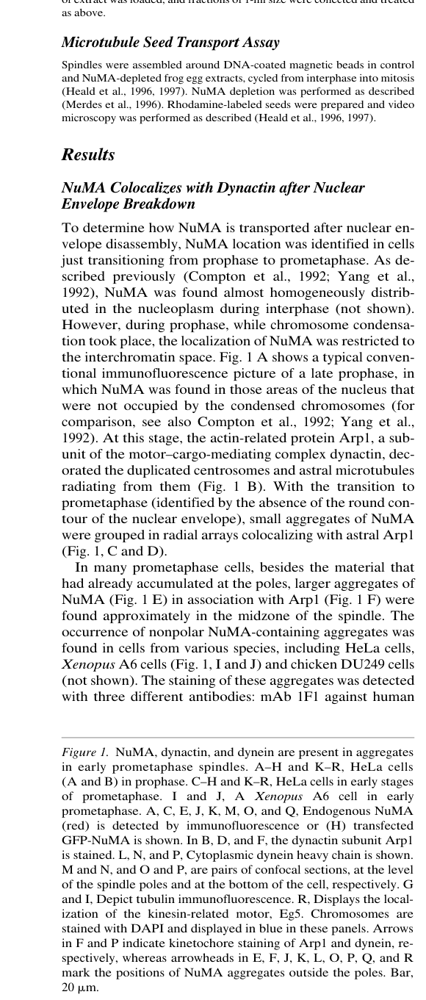
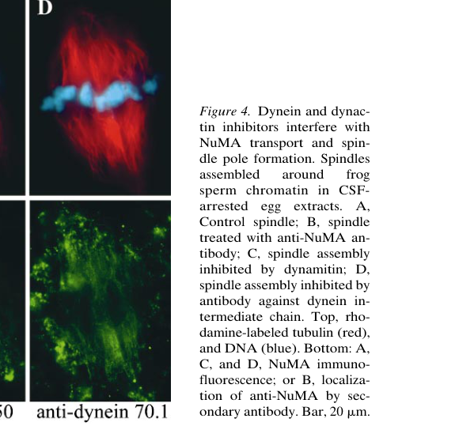
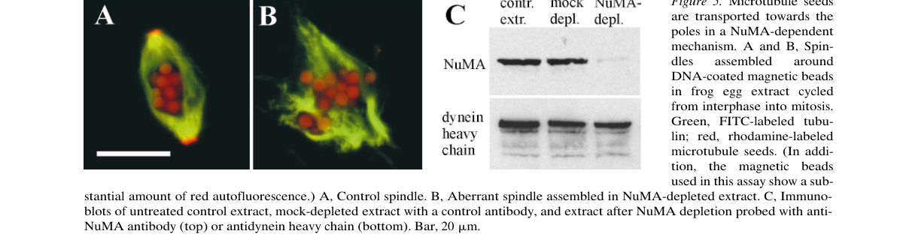
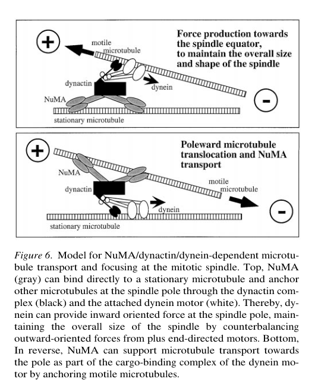

本报告由大模型自动生成，可能存在理解、归纳或数据转述错误；请以原论文为准。 Formation of Spindle Poles by Dynein/Dynactin-Dependent Transport of NumaAndreas Merdes, Rebecca Heald, Kumiko Samejima, William C. Earnshaw, Don W. Cleveland · The Journal of Cell Biology · 2000 · 原文 · PDF 图表提取提示：报告提到的 Figure 2, Figure 3 未能自动裁出；请查看原论文 PDF。 报告模型：gemini-3.1-pro-preview / high 本文是一篇发表于 2000 年的经典细胞生物学研究论文，题为《Formation of Spindle Poles by Dynein/Dynactin-dependent Transport of NuMA》（通过依赖于动力蛋白/动力蛋白激活蛋白的 NuMA 运输来形成纺锤体极）。以下将按论文的结构，逐章节为您详细梳理本文的研究背景、实验逻辑和核心结论。 为了帮助理解本文的具体内容，首先进行必要的【背景补充】：在细胞分裂（有丝分裂）期间，细胞需要将复制好的染色体平均分配给两个子细胞。这一过程依赖于一个被称为“有丝分裂纺锤体（Mitotic Spindle）”的精细物理机器。纺锤体主要由微管（Microtubules）构成。微管是一种具有极性的细胞骨架纤维，其一端生长较慢，称为“负端（Minus end）”，另一端生长较快，称为“正端（Plus end）”。在正常的双极纺锤体中，微管的负端被锚定在细胞两端的“纺锤体极（Spindle poles）”上，而正端则向细胞中心延伸并附着在染色体上。本文讨论的核心问题，就是细胞如何将这些微管的负端紧密地“捆绑”聚集在一起，形成结构稳定的纺锤体极。 研究背景与引言 (Introduction)本节介绍了当时关于纺锤体极形成的研究现状以及本文试图解决的矛盾。在有丝分裂过程中，多种蛋白质参与了纺锤体的组装。除了锚定在中心体（细胞内天然的微管组织中心）上的蛋白质外，还有一些不直接附着于中心体的蛋白质也至关重要。 这里需要定义本文关注的三个核心蛋白质分子对象：
面临的问题与动机：此前的研究表明，利用抗体抑制 dynein 的功能会导致纺锤体极无法形成。由于将多根微管捆绑在一起需要一个拥有多个“微管结合位点”的分子，而 dynein 作为一个马达蛋白，其重链二聚体上虽然有两个微管结合位点，但这俩位点都需要用来实现其在微管上的持续行走，不太可能有多余的位点去“捆绑”其他微管。因此，作者提出假设：单纯依赖 dynein 是不够的，必定存在其他拥有额外微管结合位点的蛋白质（如 NuMA 或 dynactin）参与其中。本文的核心目的，就是通过活细胞荧光成像、免疫沉淀、凝胶过滤和抗体干扰等手段，揭示 NuMA 是如何被运输到纺锤体极的，以及它与 dynein/dynactin 复合体在聚集纺锤体极中的具体协作机制。 材料与方法 (Materials and Methods)本节介绍了获取数据和验证假设的实验系统。作者主要选用了两种体系：一种是 HeLa 细胞（原文未说明具体来源或细胞系类型，用于体内活细胞观察），另一种是 Xenopus（非洲爪蟾）卵提取物（一种体外无细胞系统，保留了细胞周期的生化特性，常用于体外组装纺锤体）。 作者主要使用了以下几种非显然的技术手段和测量方法：
结果 (Results)本节逐步展示了作者的实验发现，逻辑链条从“观察现象”到“动态追踪”，再到“体外生化验证”，最后到“功能破坏”。 1. 核膜破裂后 NuMA 与 Dynactin 存在空间共定位 作者首先观察了处于早前期至前中期的细胞。在细胞核膜破裂的瞬间，原本均匀分布在核内的 NuMA 聚集成小的聚集体。作者通过多色荧光染色（图 1）发现，这些分布在纺锤体中区（不在两极）的 NuMA 聚集体，在空间位置上与 dynactin 的亚基 Arp1（actin-related protein 1，肌动蛋白相关蛋白 1）以及 dynein 高度重合。相反，另一种马达蛋白 Eg5 则没有富集在这些聚集体上。这排除了显微镜染色伪影的可能，并初步暗示了 NuMA 可能被 dynein/dynactin 作为“货物”进行搬运。  2. GFP 标记的 NuMA 在活细胞中的向极性运输 为了确认上述聚集体确实在移动，作者在活细胞中追踪了 GFP-NuMA（图 2）。录像显示，这些聚集体会沿着纺锤体纤维的轨迹，被拉向微管负端聚集的纺锤体极。作者在不同输入温度下测量了其移动速度（测量值为 时平均 ，，， 为样本总数； 时平均 ，，， 为样本总数），这一速率与已知 dynein 驱动微管运动的速率高度吻合。随后，作者加入了 Nocodazole（微管破坏剂），结果所有的 NuMA 聚集体和已经在极地积累的 NuMA 瞬间溶解在细胞质中；洗去药物让微管重新聚合后，NuMA 再次聚集并向极地运输。这证明了 NuMA 的运输和聚集完全依赖于物理存在的微管轨道。 3. NuMA 与 Dynactin 和 Dynein 形成低亲和力复合体 为了证明物理上的结合，作者对处于中期（有丝分裂活跃期）的蛙卵提取物进行了免疫沉淀实验（图 3）。结果表明，免疫沉淀 NuMA 时，dynein 和 dynactin 的关键亚基（如 p150/glued、Arp1）也被同时拉下；而拉下间期（非分裂期）的提取物时则没有这种现象。这说明它们的结合是受细胞周期特异性调控的（本文未说明具体的调控分子，仅推测与磷酸化有关）。 当加入抑制剂 dynamitin（破坏 dynactin）或 mAb 70.1（破坏 dynein）时，三者的共沉淀被显著削弱。这推断出一个结构逻辑：dynein 结合到 NuMA 上，必须依赖完整的 dynactin 复合体作为“中间桥梁”。然而，在随后的凝胶过滤实验中，作者发现这个复合体在经过长时间的层析后容易解体，绝大部分 dynein 会脱落，只留下 NuMA 和 dynactin 处于约 kD 的位置。这说明 NuMA 与 dynein 的相互作用非常微弱且是瞬时可逆的（低亲和力）。 4. 破坏 Dynactin 或 Dynein 会抑制 NuMA 运输并导致纺锤体极散开 作者在蛙卵提取物中组装了纺锤体，并在其中加入了前文提到的抗体或抑制剂（图 4）。结果发现，无论是用抗体直接中和 NuMA，还是用 dynamitin 破坏 dynactin，亦或是用抗体抑制 dynein，原本紧密聚焦的微管负端（纺锤体极）都会“开叉”并散开。特别是在抑制 dynactin 或 dynein 后，原本应该富集在极地的 NuMA，现在散落粘附在整个纺锤体纤维的长度上，无法向负端集中。这确凿地证明了：NuMA 在极地的积累直接依赖于 dynein/dynactin 的运输。  5. NuMA 依赖性的极性微管“捕获”与聚焦 作者设计了一个非常巧妙的微管种子（Microtubule Seed）运输实验（图 5）。他们将带红色荧光标记的短微管（种子）加入到正在组装的纺锤体系统中。在正常提取物中，这些红色微管会被马达蛋白拉向纺锤体极；但在人为去除了 NuMA 的提取物中，不仅纺锤体极无法成型，那些荧光微管种子也几乎不附着、更无法被运输到微管簇的中心。这表明，虽然系统中仍然存在大量的 dynein（免疫印迹证实 dynein 并未因剔除 NuMA 而消失），但没有了 NuMA，dynein 无法有效地抓住并束缚住其他微管。  讨论 (Discussion)本节中，作者将所有实验结果综合起来，提出了一个解释纺锤体极组装的分子模型（图 6）。  1. NuMA、Dynein 和 Dynactin 在极地的角色： 作者提出，只有当 dynein 与 dynactin 以及 NuMA 形成复合体时，它才对纺锤体极的形成有贡献。NuMA 的尾部已知能够直接结合微管，因此它在复合体中扮演了物理“系链（tether）”的角色。在图 6 展示的模型中，NuMA 可以锚定在一根静止的微管表面，然后利用连接在其上的 dynein 马达，去“抓住”另一根游离微管并沿着它向负端行走，从而产生向内的拉力，将多根微管的负端紧紧拉拢在一起。这种向内的力量还能平衡其他正端马达蛋白（如前文排除了共定位的 Eg5）向外推的力量，从而控制整个纺锤体的尺寸。 2. 复合体的形成与分子组成： 作者解释了为何该复合体在凝胶过滤实验中会呈现低亲和力且容易解体。由于有丝分裂是一个动态过程，纺锤体需要不断重塑，因此这些“分子棘轮（molecular ratchets）”不能是永久粘死的。基于分子量的测算，作者做出了一个定量的推测（本文中唯一的数值推算逻辑）：由于测得 NuMA/dynactin 共洗脱峰的位置在约 kD，已知两个 NuMA 二聚体的质量大约是 ，而一个完整的 dynactin 复合体大约是 kD，两者相加刚好在 kD 左右。因此推断该复合体可能由两对 NuMA 二聚体和一套完整的 dynactin 结合而成，随后再以极弱的亲和力招募 dynein 马达。 最关键的假设与局限性： 本文的结论在很大程度上依赖于抗体干扰（mAb 70.1）和抑制剂（dynamitin）的特异性。虽然实验逻辑严密，但凝胶过滤实验表明复合体极易在体外生化操作中解体。这导致作者无法在体外直接纯化出完整的 NuMA-dynactin-dynein 巨型分子机器进行精确的结构解析。此外，关于间期 NuMA 核内网状结构究竟是如何在有丝分裂初期“溶解”并与微管结合的，作者也指出这是一个未解之谜（可能涉及磷酸化，但原文未直接验证）。因此，不能将“NuMA/dynein 复合体恒定存在”这一结论过度推广至非分裂期细胞或除微管负端聚焦以外的其他细胞器运输过程中。 全文主线总结本文最初面临的问题是：仅仅依靠只有两个结合位点的 dynein 马达，细胞是如何把成百上千根微管紧紧捆绑在一起形成纺锤体极的？ 通过一步步的实验，作者首先发现核蛋白 NuMA 在空间和行为上与马达蛋白高度一致（现象）；接着在活细胞中证明了 NuMA 正是被 dynein 沿着微管运向极地的（动态过程）；然后通过生化实验确立了 NuMA-dynactin-dynein 三者形成了物理复合体（物质基础）；最后通过破坏性实验证明，如果缺少了 NuMA，即便马达还在，微管也无法被聚焦（功能验证）。 最终，本文解答了最初的疑问，确立了 NuMA 提供了必不可少的额外微管结合位点，它作为货物被马达运到微管负端后，充当了微管之间的“生物胶水”或“系带”，从而维持了纺锤体极的结构稳定 这一细胞生物学经典模型。 |